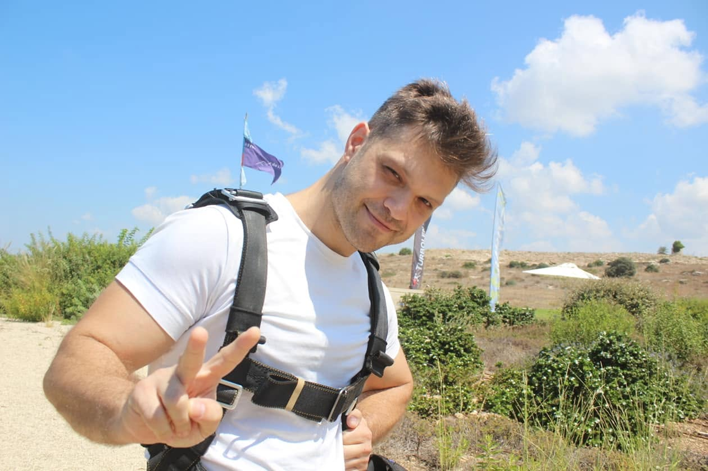
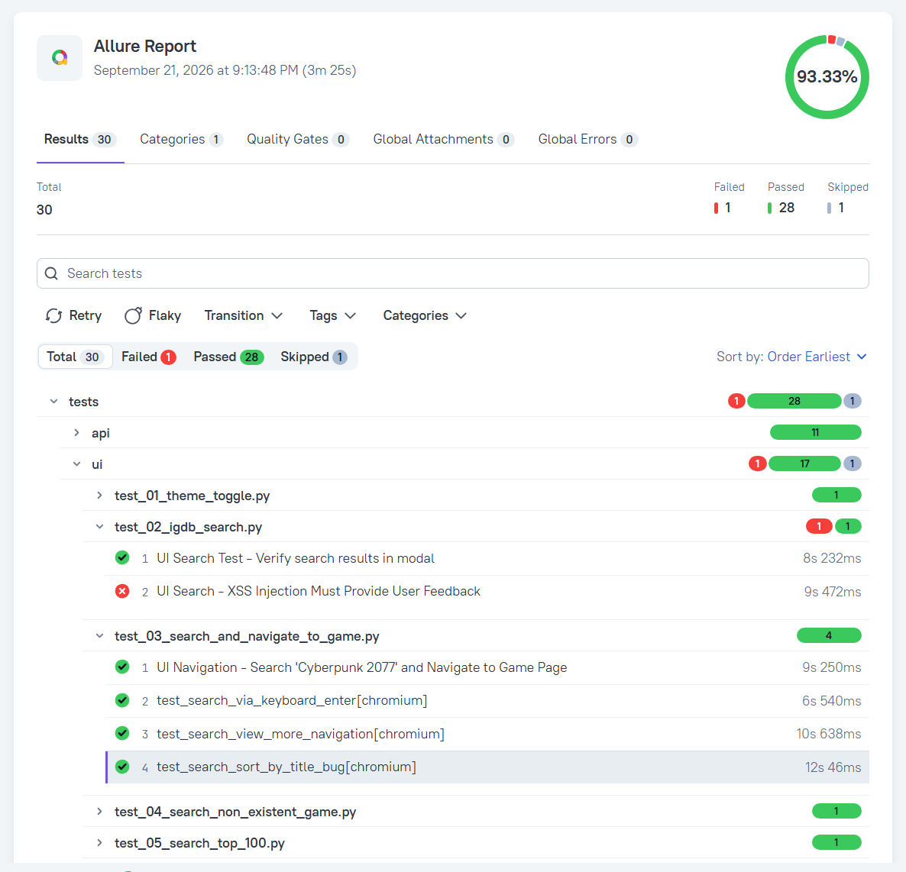

Experienced Software QA Engineer with a proven track record in manual testing, QA management, and automated test suite development. Passionate about software reliability, clean test architecture, and building robust E2E test coverage.
A comprehensive test automation framework built for the Internet Game Database (IGDB).
The suite includes automated test cases covering critical UI flows (search, multi-criteria filtering, theme toggling) and backend API validations.

Integrated with Allure Reporting Framework for detailed pass/fail analytics and visual test logs.
Generates interactive dashboards, test step breakdowns, pass/fail metrics, and embedded failure screenshots for rapid debugging.
The Technologies In Use